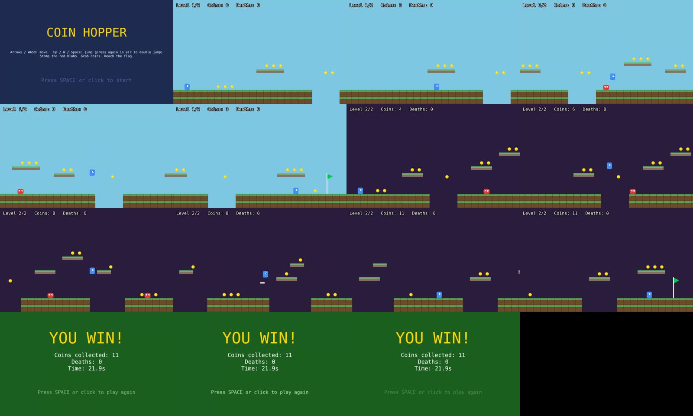

"Complete games with one free plugin"?
Repo: gamedev-skills/awesome-gamedev-agent-skills (Apache-2.0, ~8k stars).
The reel's claim (caption, verbatim): "Your Claude Code can now help you build complete video games with just one free plugin." Also: 77 skills for Godot, Unity, Unreal and browser games; "Just describe what you want to build, and Claude Code picks the relevant skills"; art direction skills; help with Steam publishing; "Comment GAME and I'll send you the GitHub repo and my setup guide." The reel shows no specific prompt.
You don't need to comment anything: the repo is public and the install is two commands (below).
The plugin is real and well made: 77 skills + a router, exactly as claimed. And when the skills load, the game gets better (coyote time, jump buffering, variable jump height, a title screen, a death counter). But when we just described the game (as the caption says to), Claude Code loaded zero skills in 7 of 7 runs. All 77 were installed and visible, and it just wrote the game from its own knowledge. The router only ran when the prompt said "use the gamedev plugin skills". Art stays code-drawn rectangles without an image tool, and "publish on Steam" gets you a checklist, not a published game.
Claims checked
| Claim | What we found | Call |
|---|---|---|
| 77 game-dev skills | 78 SKILL.md files in the repo = 77 skills + 1 router. Godot 16, Unity 8, Unreal 6, web 6, other engines 12, Ebitengine 1, disciplines 15, genres 9, workflows 4. | TRUE |
| You don't pick skills, Claude does | Plain "describe the game" prompt, plugin installed, fresh folder: all 78 gamedev skills listed, 0 loaded in 7 of 7 runs (6 Sonnet, 1 Opus; 6 of them with only the one-line prompt, prompt_exact.txt). Adding "Use the gamedev plugin skills (start with its router)": router → phaser-core, phaser-arcade-physics, platformer in 3 of 3 runs. Rerun transcripts: sonnet_r1–r5, opus_r1, sonnetB_r1–r2. | NOT ON ITS OWN |
| Builds a complete game | Both runs made a playable 2-level platformer with double jump, coins, a stomping enemy and a win screen. The skills version adds game feel and a title screen. Neither has art, sound or a menu beyond that. | HALF |
| Art-direction skills | create-game-assets plans briefs, manifests and QA. Its own fallback: with no image tool, "keep explicit greybox placeholders". Both games: shapes drawn in code. | HALF |
| Steam publishing | steam-publish is a SteamPipe/steamcmd checklist. You still need a Steamworks partner account, the USD $100 Steam Direct fee per app, tax verification and (for first titles) a 21-day wait. Asked to "publish this on Steam", Claude gave a checklist without even loading the skill: its reply. | CHECKLIST ONLY |
Install commands that worked
claude plugin marketplace add gamedev-skills/awesome-gamedev-agent-skills claude plugin install gamedev@awesome-gamedev-agent-skills claude plugin list # gamedev@awesome-gamedev-agent-skills ✔ enabled
Full install log (Claude Code 2.1.319). Other agents: npx skills add gamedev-skills/awesome-gamedev-agent-skills.
The fix that matters: start your prompt with Use the gamedev plugin skills (start with its router). Otherwise they may never load.
The exact prompts
- Run A (just describing the game): prompt.txt (with a note about our test setup), then
publish this on Steamin the same session. Reruns used only the first line: prompt_exact.txt - Run B (same + one line asking for the plugin): prompt_B.txt
claude -p, model claude-sonnet-5-5, fresh empty folder, plugin installed. The environment note in the prompts is there because our test shell can't run a dev server.Play the games
- Game A: plugin installed, no skill loaded (game.js)
- Game B: router + Phaser + platformer skills (game.js)
Arrows/WASD to move, Up/W/Space to jump, jump again in the air to double jump. Both were played start to win screen in a browser.

| A: no skills | B: with skills | |
|---|---|---|
| Turns | 4 | 14 |
| Output tokens | 6,687 | 13,237 |
| All tokens (incl. cached reads) | ~102k | ~339k (3.3x; B also built more features) |
| Jump | double jump | double jump + coyote time + jump buffer + variable height |
| Screens | levels + win | title + levels + win (coins, deaths, time) |
| Enemies | 1 per level | 1 in level 1, 2 in level 2 |
| Art | shapes drawn in code (no image files) | |
Transcripts: run A · run A Steam question · run B
What broke + fixes
- Skills didn't auto-load on the reel's prompt. Fix: name the plugin in your prompt, or invoke
/gamedev:router. - No art. Connect an image tool and run the
create-game-assetsworkflow, or bring your own sprites. - Game A loads Phaser from a CDN, so it won't run offline or as a Steam build. Game B saved Phaser locally.
- Game A's controls hint is drawn over the ground tiles at the bottom of the screen.
- Neither run tested its own game (no browser in the agent's sandbox); we played both to the win screen ourselves.
Fine print
- All 7 runs were headless (
claude -p); interactive Claude Code was not tested: on our test setup the API rejected interactive sessions with a "credit balance too low" error while headless runs on the same key worked, so we couldn't run it. Skill loading checked over 7 runs (Sonnet + one Opus) and 3 runs with the plugin named. Game quality and tokens are from one run each (A and B). Other agents (Cursor, Codex) weren't tested. - Steam numbers are from the repo's steam-publish skill (Nov 2026). Check Steamworks for current terms.
Who it's for / what to use instead
- Worth installing if you make games with an AI agent, especially Godot. It's a free, well-organised knowledge pack. Just tell the agent to use it.
- Not a one-click game factory: no art, no sound, no publishing.
- For a tiny browser game, plain Claude Code already gets you a playable prototype.
All test kits · Instagram · YouTube · Spotted a mistake? Comment on the video.